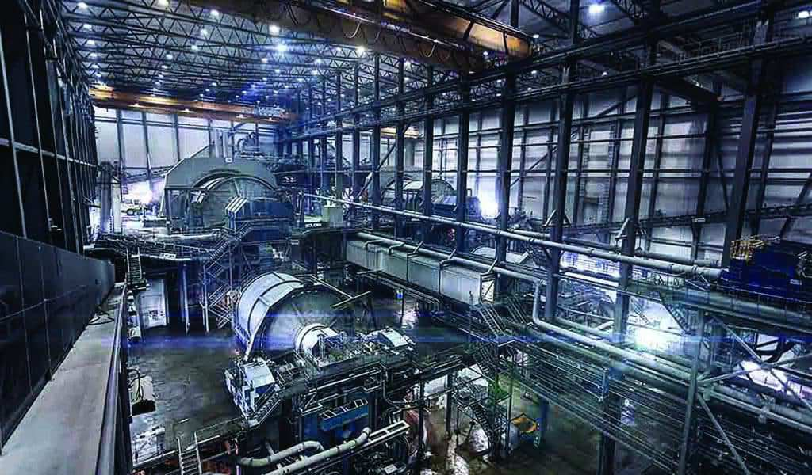

Automatización y robotización en la Industria de la Automoción
Implementación de sistemas automatizados para optimizar la producción en la industria automotriz, reduciendo costos y aumentando la eficiencia.
La industria farmacéutica y su automatización
Integración de tecnologías automatizadas en procesos de fabricación farmacéutica para asegurar la calidad y la trazabilidad de los productos.
Automatización industrial en minería
Desarrollo de sistemas de control automatizado para mejorar la seguridad y la eficiencia en operaciones mineras.
La automatización industrial agrícola
Uso de tecnología para automatizar procesos agrícolas, aumentando la productividad y la sostenibilidad.
Automatización de IT de una empresa
Implementación de soluciones automatizadas para la gestión de IT en empresas, mejorando la eficiencia operativa.
Automatización empresarial en marketing
Desarrollo de sistemas automatizados para gestionar campañas de marketing, mejorando la segmentación y la efectividad.
Automatización de edificios
Integración de sistemas de automatización para la gestión eficiente de recursos en edificios comerciales y residenciales.
Automatización industrial de datos
Creación de sistemas automatizados para la recolección y análisis de datos en entornos industriales.
Automatización industrial con blockchain
Integración de tecnología blockchain en procesos industriales para mejorar la transparencia y la seguridad.
Machine Learning
Aplicación de algoritmos de aprendizaje automático para mejorar los procesos y la toma de decisiones empresariales.

Proceso de automatización
Desarrollo de un marco integral para la automatización de procesos en diversas industrias.

Diseño y creación de bases de datos
Diseño de estructuras de bases de datos eficientes y escalables para el almacenamiento y recuperación de datos.
Aplicaciones de visualización
Desarrollo de aplicaciones que permiten visualizar datos de manera interactiva y comprensible.
Automatización de procesos
Implementación de sistemas para automatizar tareas repetitivas, mejorando la productividad.
Sistemas de control
Desarrollo de sistemas de control para la supervisión y gestión de procesos industriales.